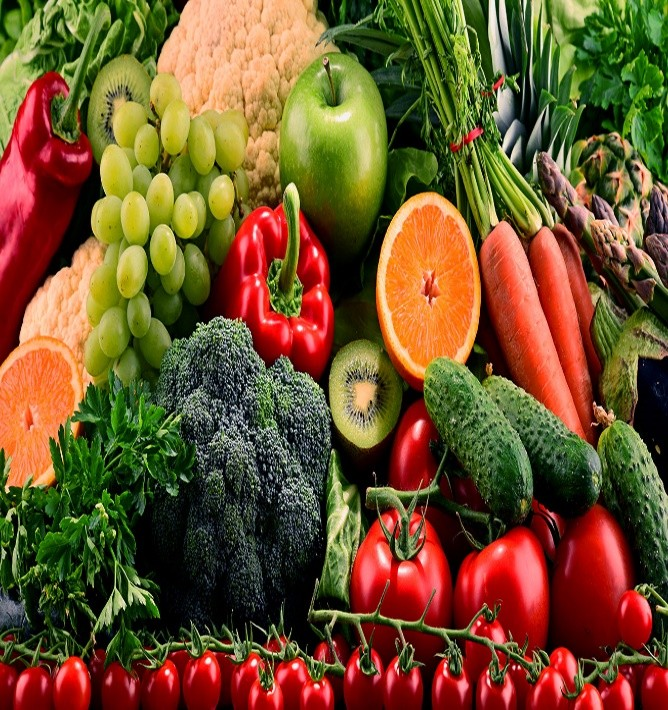
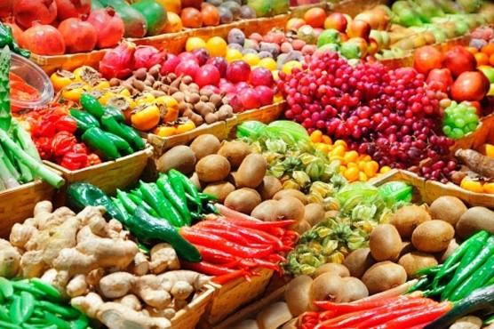
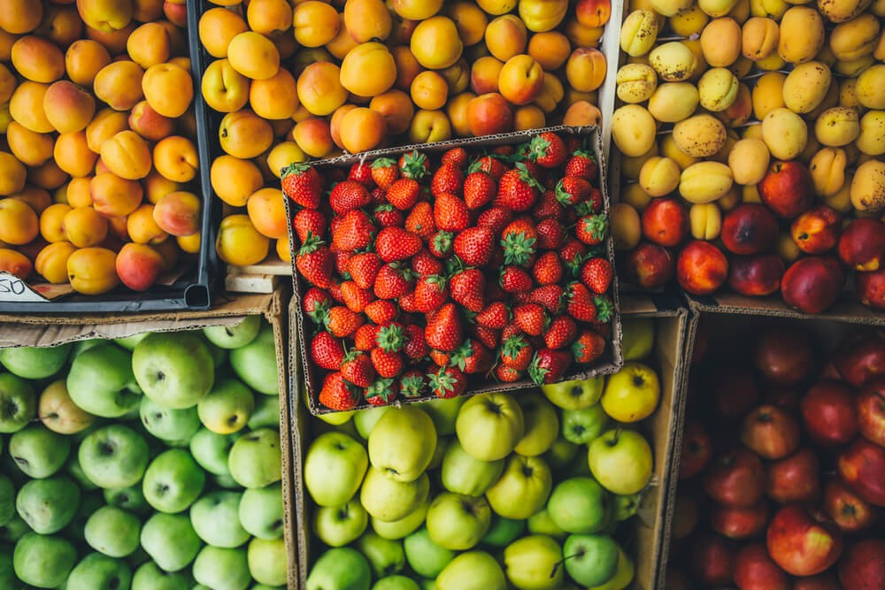

CONHECENDO OS ALIMENTOS:DO NATURAL AOS INDUSTRIALIZADOS
Os alimentos in natura ou minimamente processados são aqueles que passam por pouca ou nenhuma alteração industrial antes de chegarem ao consumo. Exemplos incluem frutas, verduras, legumes, ovos, leite, arroz, feijão e carnes frescas. Esses alimentos preservam melhor seus nutrientes naturais, como vitaminas, minerais e fibras, sendo fundamentais para uma alimentação saudável e equilibrada.
O consumo frequente de alimentos não processados ajuda na prevenção de doenças como obesidade, diabetes e hipertensão, além de contribuir para mais energia e bem-estar. Já os alimentos ultraprocessados costumam conter excesso de açúcar, sal, gorduras e aditivos químicos, podendo prejudicar a saúde quando consumidos em excesso.
Por isso, priorizar alimentos frescos e naturais no dia a dia é uma das melhores formas de manter uma boa qualidade de vida.
Os alimentos in natura são importantes para a saúde porque têm vitaminas, minerais e fibras que ajudam o corpo a crescer, ter energia e evitar doenças. Eles também fazem bem para o coração, os ossos e a digestão.


